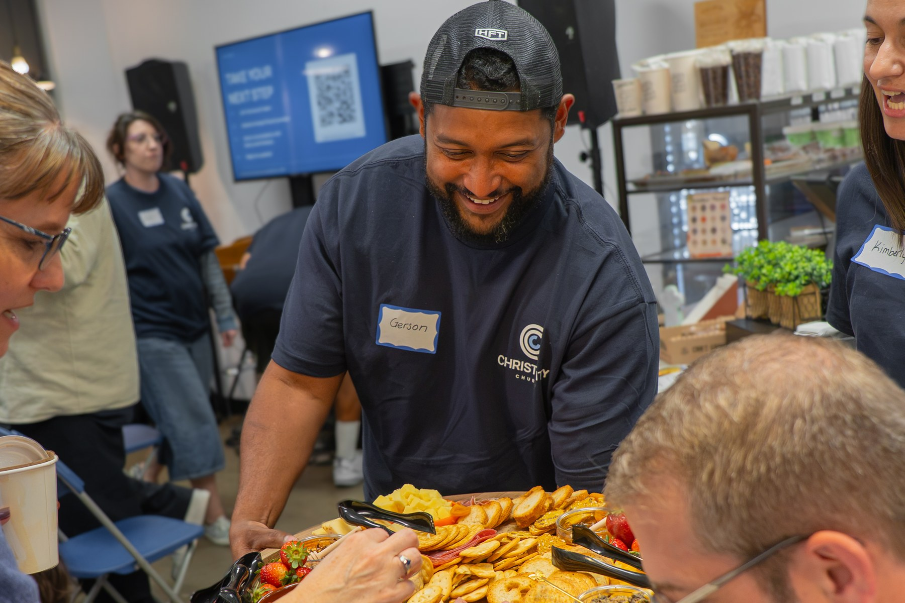

GIVE
HELP US START CHRIST CITY
Every gift goes toward opening a church for our neighbors, one house at a time.
GIVE $100
Next you finish on Church Center, our secure giving page. Choose one time or monthly. Card or bank account, and you can change or stop a monthly gift any time.
